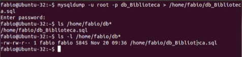

Processo Para criar um site e o disponiblizar para a internet, através de outra pessoa além de você. Há dois tipos de aplicações, sendo elas as estáticas e dinâmicas. As Páginas Estáticas, não possui processamento no servidos. Já as dinâmicas, depende de um certo servidor para que processe os dados e gera páginas com base em bancos de dados.
2 - Resposta
Domínio: Nome que identifica um site. DNS: é um tipo de serviço que traduz nomes de domínios em IP.
3 - Resposta
Compartilhado: Os recursos são divididos entre vários usuários, o valor é baixo mas se entrar muitas pessoas pode sobrecarregar o site.
Dedicado: Alto desemprenho nos sites com total controle, mas alto custo e precisa de conhecimentos técnicos.
4 - Resposta
Software que hospeda sites para usuários.
Dois Principais Servidores: Apache, flexivel e muito utilizado e Nginx: Mais eficiente para lidar com maior número de pessoas em sites.
Como Fazer o Backup:
Conectar ao Banco de Dados: Use um cliente de banco de dados como o pgAdmin (para PostgreSQL), MySQL Workbench ou SQL Server Management Studio.
Selecionar o Banco de Dados: Escolha o banco de dados que deseja fazer o backup.
Exportar o Backup: A maioria dos clientes de banco de dados tem uma opção de "Exportar" ou "Dump" que cria um arquivo de backup (normalmente em formato SQL).
Aqui está um exemplo de como fazer isso via linha de comando no MySQL:
mysqldump -u usuário -p banco_de_dados > backup.sql
Como Restaurar o Backup:
Conectar ao Banco de Dados: Assim como no backup, abra o cliente de banco de dados.
Importar o Arquivo de Backup: Procure a opção de "Importar" ou "Restore" e selecione o arquivo de backup que você criou.
Aqui está um exemplo de como fazer isso via linha de comando no MySQL:
mysql -u usuário -p banco_de_dados backup.sql

6 - Resposta
É um protocolo que acessa remotamente servidores de forma segura.
O SSH funciona com base em uma chave pública/privada. Quando um usuário se conecta a um dispositivo remoto usando o Secure Shell, o dispositivo envia sua chave pública para o usuário.
O usuário, por sua vez, usa a chave pública para criptografar suas informações antes de enviá-las para o dispositivo remoto.
O dispositivo remoto, por sua vez, usa a sua chave privada para decodificar as informações recebidas.
7 - Resposta
Sistema Operacional Open Sourse, usado principalmente por sua estabilidade e segurança